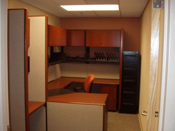
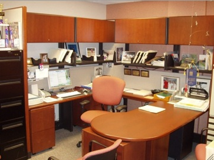

Home |
OMLAB History |
Personnel |
Software and OMS Models |
Teaching Materials |
The "Editorial Page" |
Contact Us
Welcome to the Daroff-Dell'Osso Ocular Motility Laboratory
OMLAB Office Area

Office Entrance Hall Reception Conference Room

Office: LF Dell'Osso Office: RJ Leigh Office: JS Stahl
Office: JB Jacobs Office: Graduate Students Office: Graduate Students
Office: N-O/Visiting Scientist Vision Testing Room Office: Engineers

Coffee
OMLAB Laboratory Area


Lab Entrance Hall Eye-Head &IR/Video Rooms Moog Room


Coil Room 1 Coil Room 2 Shop
Home |
OMLAB History |
Personnel |
Software and OMS Models |
Teaching Materials |
The "Editorial Page" |
Contact Us